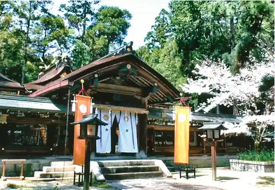
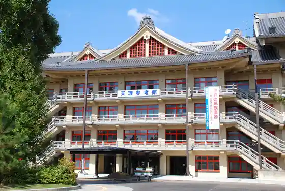
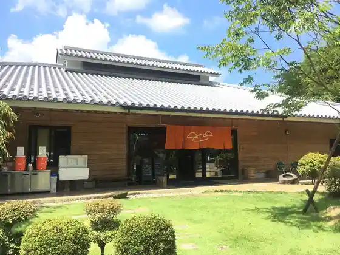

Ishigami Shrine
Tenri, Nara · 0743-62-0900 · Official / source link
Chogaku Tera
Tenri, Nara · 0743-66-1051 · Official / source link
Yamato Shrine
Tenri, Nara · 0743-66-0044 · Official / source link

Tenri Daigaku Fuzoku Tenri Sanko Kan
Tenri, Nara · 0743-63-8414 · Official / source link

Tenri Toreiru Center
Tenri, Nara · 0743-67-3810 · Official / source link

Nara Rekishi Geijutsu Bunka Village
Tenri, Nara · 0743-86-4420 · Official / source link
Uchiyama Eikyu Jiseki
Tenri, Nara · 0743-63-1001 · Official / source link
Momo O Falls
Tenri, Nara · 0743-63-1001 · Official / source link
Yamabe Michi Ko Okagami Ryo (Sujin Tenno Ryo)
Tenri, Nara · 0743-63-1001 · Official / source link
Kuro Tsuka Burial Mound
Tenri, Nara · 0743-63-1001 · Official / source link
Yamabe Dojo Ryo (Kageyuki Tenno Ryo)
Tenri, Nara · Official / source link
Sanju Hachi Shrine
Tenri, Nara · 0743-63-1001 · Official / source link
Shapu Museum (Tenri)
Tenri, Nara · 080-7336-4862,080-7329-4130 · Official / source link
Tenri Tourist Farm
Tenri, Nara · 0743-66-1663 · Official / source link
Fusuma Ta Ryo
Tenri, Nara · 0743-63-1001 · Official / source link